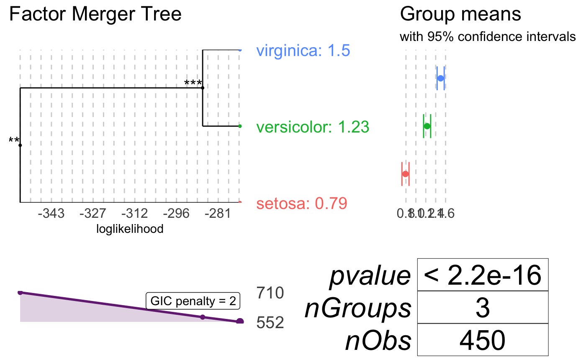
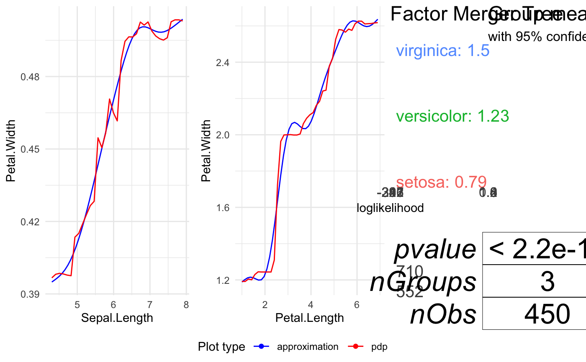
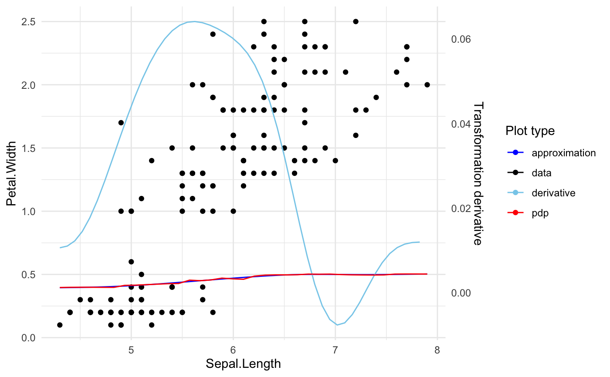

Plot variable profile
plot_variable_transition.RdThe function plots variable profile.
In case of quantiitative variable it plots original transition function and its spline approximation.
The function provides possibility to plot data points and transition derivative as well.
In case of qualitative variable it plots merging path for variable levels.
When no variable is specified it plots transitions for first n_plots variables.
plot_variable_transition(x, variable_names = NULL, plot_response = TRUE, plot_approx = TRUE, data = NULL, plot_data = FALSE, plot_deriv = FALSE, n_plots = 6, use_coeff = TRUE)
Arguments
| variable_names | Names of predictors which transitions should be plotted. |
|---|---|
| plot_response | If TRUE black box model response is drawn. |
| plot_approx | If TRUE black box model response approximation is drawn. |
| data | Training data used for building |
| plot_data | If TRUE raw data is drawn. |
| plot_deriv | If TRUE derivative of approximation is showed on plot. |
| n_plots | Threshold for number of plots when plotting all variables. |
| use_coeff | If TRUE both PDP function and its approximation is scaled with corresponding surrogate model coefficient. |
Examples
library(randomForest) set.seed(1) data <- iris # regression model iris.rf <- randomForest(Petal.Width ~ Sepal.Length + Petal.Length + Species, data = data) iris.xs <- xspline(iris.rf) # plot Sepal.Length transition plot_variable_transition(iris.xs, "Sepal.Length")# plot Species transition plot_variable_transition(iris.xs, "Species")# plot all transitions plot_variable_transition(iris.xs)# plot Sepal.Length transition, its derivative and data points plot_variable_transition(iris.xs, "Sepal.Length", data = data, plot_data = TRUE, plot_deriv = TRUE)